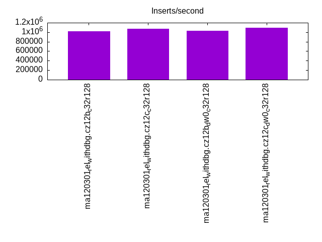
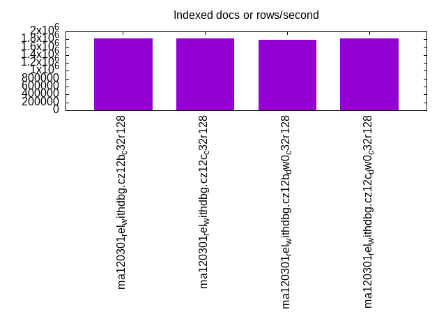
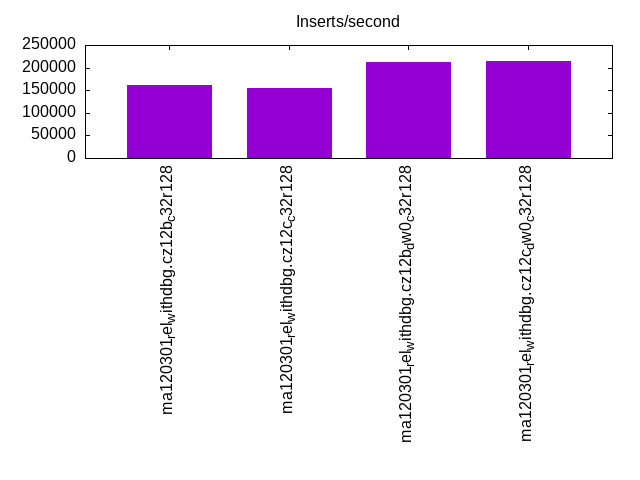
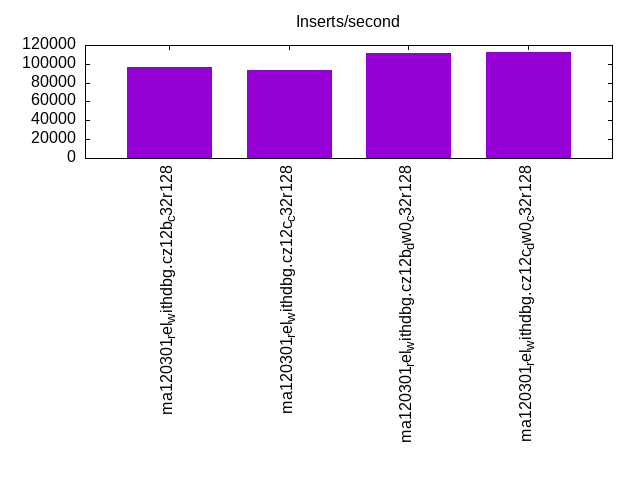
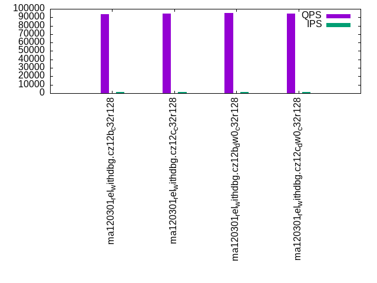
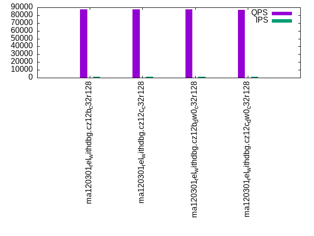
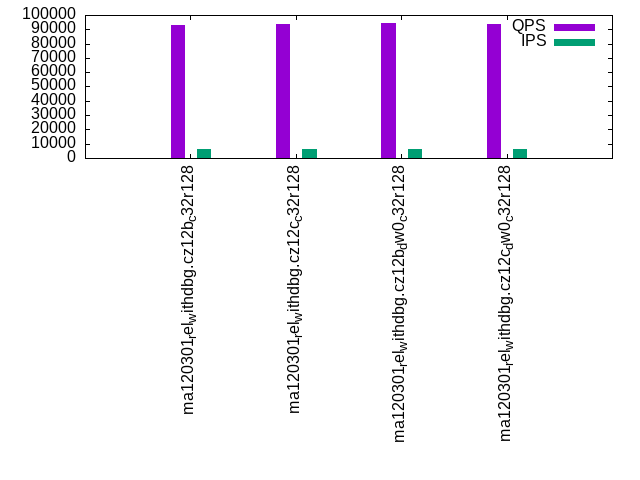
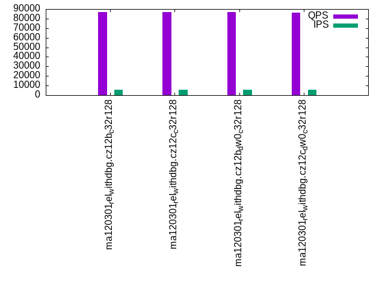
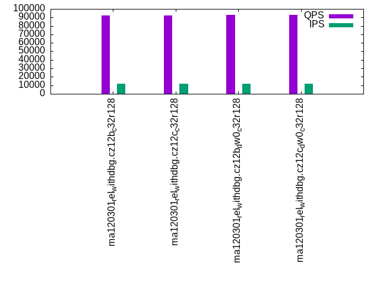
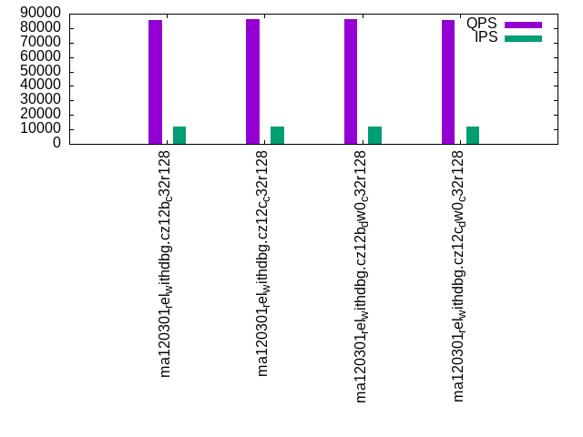

This is a report for the insert benchmark with 120M docs and 12 client(s). It is generated by scripts (bash, awk, sed) and Tufte might not be impressed. An overview of the insert benchmark is here and a short update is here. Below, by DBMS, I mean DBMS+version.config. An example is my8020.c10b40 where my means MySQL, 8020 is version 8.0.20 and c10b40 is the name for the configuration file.
The test server has 32 cores, 128G RAM and 1 NVMe device. The benchmark was run with 12 clients and there were 1 or 3 connections per client (1 for queries or inserts without rate limits, 1+1 for rate limited inserts+deletes). It uses 8 tables with a table per client. It loads 10M rows per table without secondary indexes, creates 3 secondary indexes per table, then inserts 16m+4m rows per table with a delete per insert to avoid growing the table. It then does 6 read+write tests for 1800s each that do queries as fast as possible with 100,100,500,500,1000,1000 inserts/s and the same for deletes/s per client concurrent with the queries. The database is cached. Clients and the DBMS share one server.
The tested DBMS are:
The numbers are inserts/s for l.i0, l.i1 and l.i2, indexed docs (or rows) /s for l.x and queries/s for qr100, qp100 thru qr1000, qp1000" The values are the average rate over the entire test for inserts (IPS) and queries (QPS). The range of values for IPS and QPS is split into 3 parts: bottom 25%, middle 50%, top 25%. Values in the bottom 25% have a red background, values in the top 25% have a green background and values in the middle have no color. A gray background is used for values that can be ignored because the DBMS did not sustain the target insert rate. Red backgrounds are not used when the minimum value is within 80% of the max value.
| dbms | l.i0 | l.x | l.i1 | l.i2 | qr100 | qp100 | qr500 | qp500 | qr1000 | qp1000 |
|---|---|---|---|---|---|---|---|---|---|---|
| ma120301_rel_withdbg.cz12b_c32r128 | 1016949 | 1818183 | 161344 | 96579 | 93888 | 87344 | 92881 | 86635 | 91974 | 85680 |
| ma120301_rel_withdbg.cz12c_c32r128 | 1071428 | 1818183 | 155844 | 93567 | 94446 | 87724 | 93611 | 86909 | 92599 | 86018 |
| ma120301_rel_withdbg.cz12b_dw0_c32r128 | 1025641 | 1791046 | 211687 | 111111 | 94920 | 87664 | 94088 | 86954 | 93108 | 86035 |
| ma120301_rel_withdbg.cz12c_dw0_c32r128 | 1090909 | 1818183 | 215247 | 112150 | 94658 | 86896 | 94030 | 86250 | 92738 | 85526 |
This table has relative throughput, throughput for the DBMS relative to the DBMS in the first line, using the absolute throughput from the previous table. Values less than 0.95 have a yellow background. Values greater than 1.05 have a blue background.
| dbms | l.i0 | l.x | l.i1 | l.i2 | qr100 | qp100 | qr500 | qp500 | qr1000 | qp1000 |
|---|---|---|---|---|---|---|---|---|---|---|
| ma120301_rel_withdbg.cz12b_c32r128 | 1.00 | 1.00 | 1.00 | 1.00 | 1.00 | 1.00 | 1.00 | 1.00 | 1.00 | 1.00 |
| ma120301_rel_withdbg.cz12c_c32r128 | 1.05 | 1.00 | 0.97 | 0.97 | 1.01 | 1.00 | 1.01 | 1.00 | 1.01 | 1.00 |
| ma120301_rel_withdbg.cz12b_dw0_c32r128 | 1.01 | 0.99 | 1.31 | 1.15 | 1.01 | 1.00 | 1.01 | 1.00 | 1.01 | 1.00 |
| ma120301_rel_withdbg.cz12c_dw0_c32r128 | 1.07 | 1.00 | 1.33 | 1.16 | 1.01 | 0.99 | 1.01 | 1.00 | 1.01 | 1.00 |
This lists the average rate of inserts/s for the tests that do inserts concurrent with queries. For such tests the query rate is listed in the table above. The read+write tests are setup so that the insert rate should match the target rate every second. Cells that are not at least 95% of the target have a red background to indicate a failure to satisfy the target.
| dbms | qr100.L1 | qp100.L2 | qr500.L3 | qp500.L4 | qr1000.L5 | qp1000.L6 |
|---|---|---|---|---|---|---|
| ma120301_rel_withdbg.cz12b_c32r128 | 1193 | 1193 | 5964 | 5960 | 11927 | 11927 |
| ma120301_rel_withdbg.cz12c_c32r128 | 1193 | 1193 | 5964 | 5960 | 11927 | 11927 |
| ma120301_rel_withdbg.cz12b_dw0_c32r128 | 1193 | 1193 | 5964 | 5960 | 11927 | 11927 |
| ma120301_rel_withdbg.cz12c_dw0_c32r128 | 1193 | 1193 | 5964 | 5960 | 11927 | 11927 |
| target | 1200 | 1200 | 6000 | 6000 | 12000 | 12000 |
l.i0: load without secondary indexes. Graphs for performance per 1-second interval are here.
Average throughput:

Insert response time histogram: each cell has the percentage of responses that take <= the time in the header and max is the max response time in seconds. For the max column values in the top 25% of the range have a red background and in the bottom 25% of the range have a green background. The red background is not used when the min value is within 80% of the max value.
| dbms | 256us | 1ms | 4ms | 16ms | 64ms | 256ms | 1s | 4s | 16s | gt | max |
|---|---|---|---|---|---|---|---|---|---|---|---|
| ma120301_rel_withdbg.cz12b_c32r128 | 96.227 | 3.691 | 0.028 | 0.005 | 0.049 | 0.223 | |||||
| ma120301_rel_withdbg.cz12c_c32r128 | 96.936 | 2.985 | 0.068 | 0.006 | 0.003 | 0.255 | |||||
| ma120301_rel_withdbg.cz12b_dw0_c32r128 | 96.246 | 3.671 | 0.030 | 0.005 | 0.048 | 0.124 | |||||
| ma120301_rel_withdbg.cz12c_dw0_c32r128 | 97.457 | 2.468 | 0.064 | 0.010 | 0.001 | 0.090 |
Performance metrics for the DBMS listed above. Some are normalized by throughput, others are not. Legend for results is here.
ips qps rps rmbps wps wmbps rpq rkbpq wpi wkbpi csps cpups cspq cpupq dbgb1 dbgb2 rss maxop p50 p99 tag 1016949 0 0 0.0 2371.5 215.9 0.000 0.000 0.002 0.217 150276 44.2 0.148 14 8.0 108.8 10.0 0.223 102487 90789 ma120301_rel_withdbg.cz12b_c32r128 1071428 0 0 0.0 5157.9 373.3 0.000 0.000 0.005 0.357 164714 46.5 0.154 14 8.0 109.3 8.3 0.255 110084 97688 ma120301_rel_withdbg.cz12c_c32r128 1025641 0 0 0.0 2367.8 215.9 0.000 0.000 0.002 0.216 151202 44.0 0.147 14 8.0 108.8 10.0 0.124 106086 93789 ma120301_rel_withdbg.cz12b_dw0_c32r128 1090909 0 0 0.0 5233.7 374.8 0.000 0.000 0.005 0.352 165527 46.3 0.152 14 8.0 109.3 8.4 0.090 110287 105087 ma120301_rel_withdbg.cz12c_dw0_c32r128
Average values from iostat.
r/s rkB/s rrqm/s %rrqm r_await rareq-s w/s wkB/s wrqm/s %wrqm w_await wareq-s d/s dkB/s drqm/s %drqm d_await dareq-s f/s f_await aqu-sz %util 0.243 3.896 0.000 0.000 0.005 0.696 2371.5 221113 170.5 9.237 0.299 103.6 3.565 43.10 0.000 0.000 0.995 10.94 55.86 0.394 0.521 12.66 ma120301_rel_withdbg.cz12b_c32r128 0.300 4.800 0.000 0.000 0.005 0.727 5157.9 382309 226.5 5.841 0.326 85.66 2.173 42.29 0.000 0.000 1.505 18.12 67.73 0.388 1.335 18.61 ma120301_rel_withdbg.cz12c_c32r128 0.243 3.896 0.000 0.000 0.005 0.696 2367.8 221045 174.2 9.353 0.283 103.8 2.270 46.89 0.000 0.000 1.030 17.98 55.92 0.383 0.471 12.65 ma120301_rel_withdbg.cz12b_dw0_c32r128 0.245 3.927 0.000 0.000 0.005 0.727 5233.7 383826 224.4 5.766 0.318 85.02 1.700 45.78 0.000 0.000 1.611 20.37 65.65 0.380 1.290 18.66 ma120301_rel_withdbg.cz12c_dw0_c32r128
l.x: create secondary indexes.
Average throughput:

Performance metrics for the DBMS listed above. Some are normalized by throughput, others are not. Legend for results is here.
ips qps rps rmbps wps wmbps rpq rkbpq wpi wkbpi csps cpups cspq cpupq dbgb1 dbgb2 rss maxop p50 p99 tag 1818183 0 0 0.0 13561.5 1272.1 0.000 0.000 0.007 0.716 21213 31.5 0.012 6 16.9 117.7 17.8 0.002 NA NA ma120301_rel_withdbg.cz12b_c32r128 1818183 0 0 0.0 13497.1 1273.3 0.000 0.000 0.007 0.717 21305 31.1 0.012 5 16.9 118.2 17.9 0.001 NA NA ma120301_rel_withdbg.cz12c_c32r128 1791046 0 0 0.0 13345.0 1266.8 0.000 0.000 0.007 0.724 20120 31.5 0.011 6 16.9 117.7 17.5 0.002 NA NA ma120301_rel_withdbg.cz12b_dw0_c32r128 1818183 0 0 0.0 13521.9 1273.9 0.000 0.000 0.007 0.717 21102 31.1 0.012 5 16.9 118.2 17.9 0.002 NA NA ma120301_rel_withdbg.cz12c_dw0_c32r128
Average values from iostat.
r/s rkB/s rrqm/s %rrqm r_await rareq-s w/s wkB/s wrqm/s %wrqm w_await wareq-s d/s dkB/s drqm/s %drqm d_await dareq-s f/s f_await aqu-sz %util 0.015 0.246 0.000 0.000 0.000 1.231 13561.5 1302640 406.9 2.756 0.229 86.34 23.31 152294 0.000 0.000 1.298 4057.5 80.58 0.624 3.698 39.39 ma120301_rel_withdbg.cz12b_c32r128 0.185 20.31 0.000 0.000 0.100 19.02 13497.1 1303904 401.9 2.696 0.222 92.03 22.45 152280 0.000 0.000 1.232 4288.1 84.05 0.615 3.674 38.79 ma120301_rel_withdbg.cz12c_c32r128 0.015 0.245 0.000 0.000 0.000 1.231 13345.0 1297190 398.2 2.679 0.257 88.39 21.50 138359 0.000 0.000 1.366 4001.8 78.86 0.653 4.054 38.79 ma120301_rel_withdbg.cz12b_dw0_c32r128 0.046 3.385 0.000 0.000 0.038 9.077 13521.9 1304492 389.1 2.721 0.221 91.29 22.80 152286 0.000 0.000 1.222 4222.3 82.12 0.591 3.618 38.27 ma120301_rel_withdbg.cz12c_dw0_c32r128
l.i1: continue load after secondary indexes created with 50 inserts per transaction. Graphs for performance per 1-second interval are here.
Average throughput:

Insert response time histogram: each cell has the percentage of responses that take <= the time in the header and max is the max response time in seconds. For the max column values in the top 25% of the range have a red background and in the bottom 25% of the range have a green background. The red background is not used when the min value is within 80% of the max value.
| dbms | 256us | 1ms | 4ms | 16ms | 64ms | 256ms | 1s | 4s | 16s | gt | max |
|---|---|---|---|---|---|---|---|---|---|---|---|
| ma120301_rel_withdbg.cz12b_c32r128 | 0.056 | 95.439 | 2.415 | 1.451 | 0.473 | 0.166 | 0.001 | 3.012 | |||
| ma120301_rel_withdbg.cz12c_c32r128 | 0.339 | 95.041 | 2.391 | 1.485 | 0.530 | 0.213 | 0.001 | 2.735 | |||
| ma120301_rel_withdbg.cz12b_dw0_c32r128 | 0.004 | 96.038 | 2.832 | 0.994 | 0.114 | 0.016 | 0.002 | 2.796 | |||
| ma120301_rel_withdbg.cz12c_dw0_c32r128 | 0.015 | 96.830 | 2.151 | 0.862 | 0.109 | 0.033 | nonzero | 1.984 |
Delete response time histogram: each cell has the percentage of responses that take <= the time in the header and max is the max response time in seconds. For the max column values in the top 25% of the range have a red background and in the bottom 25% of the range have a green background. The red background is not used when the min value is within 80% of the max value.
| dbms | 256us | 1ms | 4ms | 16ms | 64ms | 256ms | 1s | 4s | 16s | gt | max |
|---|---|---|---|---|---|---|---|---|---|---|---|
| ma120301_rel_withdbg.cz12b_c32r128 | 1.595 | 94.238 | 2.148 | 1.404 | 0.459 | 0.155 | 0.001 | 3.012 | |||
| ma120301_rel_withdbg.cz12c_c32r128 | 2.464 | 93.286 | 2.106 | 1.428 | 0.521 | 0.194 | 0.001 | 3.079 | |||
| ma120301_rel_withdbg.cz12b_dw0_c32r128 | 0.141 | 96.155 | 2.601 | 0.972 | 0.113 | 0.015 | 0.002 | 2.798 | |||
| ma120301_rel_withdbg.cz12c_dw0_c32r128 | 0.102 | 96.925 | 1.960 | 0.870 | 0.110 | 0.033 | nonzero | 1.984 |
Performance metrics for the DBMS listed above. Some are normalized by throughput, others are not. Legend for results is here.
ips qps rps rmbps wps wmbps rpq rkbpq wpi wkbpi csps cpups cspq cpupq dbgb1 dbgb2 rss maxop p50 p99 tag 161344 0 0 0.0 8545.7 285.7 0.000 0.000 0.053 1.813 123631 49.6 0.766 98 27.1 129.2 30.2 3.012 15498 150 ma120301_rel_withdbg.cz12b_c32r128 155844 0 0 0.0 8077.8 294.7 0.000 0.000 0.052 1.936 110791 46.3 0.711 95 27.1 129.7 30.2 2.735 15698 150 ma120301_rel_withdbg.cz12c_c32r128 211687 0 0 0.0 8588.8 279.2 0.000 0.000 0.041 1.351 152630 68.0 0.721 103 27.1 129.3 30.3 2.796 18048 2000 ma120301_rel_withdbg.cz12b_dw0_c32r128 215247 0 0 0.0 7997.1 301.5 0.000 0.000 0.037 1.434 134142 69.2 0.623 103 27.2 129.8 30.4 1.984 18797 2950 ma120301_rel_withdbg.cz12c_dw0_c32r128
Average values from iostat.
r/s rkB/s rrqm/s %rrqm r_await rareq-s w/s wkB/s wrqm/s %wrqm w_await wareq-s d/s dkB/s drqm/s %drqm d_await dareq-s f/s f_await aqu-sz %util 0.001 0.003 0.000 0.000 0.017 0.017 8545.7 292531 462.7 4.781 2.434 33.82 0.686 13.97 0.000 0.000 1.398 11.82 626.2 0.681 9.002 51.72 ma120301_rel_withdbg.cz12b_c32r128 0.000 0.000 0.000 0.000 0.000 0.000 8077.8 301732 393.1 4.341 3.141 36.75 0.780 15.99 0.000 0.000 4.354 19.11 555.1 0.888 12.00 55.32 ma120301_rel_withdbg.cz12c_c32r128 0.001 0.004 0.000 0.000 0.000 0.022 8588.8 285940 433.9 4.447 4.070 33.61 1.039 11.85 0.000 0.000 2.470 7.096 82.79 1.200 18.65 35.91 ma120301_rel_withdbg.cz12b_dw0_c32r128 0.000 0.000 0.000 0.000 0.000 0.000 7997.1 308722 325.1 3.503 10.33 41.07 0.892 12.45 0.000 0.000 5.722 12.45 77.99 2.275 36.72 42.74 ma120301_rel_withdbg.cz12c_dw0_c32r128
l.i2: continue load after secondary indexes created with 5 inserts per transaction. Graphs for performance per 1-second interval are here.
Average throughput:

Insert response time histogram: each cell has the percentage of responses that take <= the time in the header and max is the max response time in seconds. For the max column values in the top 25% of the range have a red background and in the bottom 25% of the range have a green background. The red background is not used when the min value is within 80% of the max value.
| dbms | 256us | 1ms | 4ms | 16ms | 64ms | 256ms | 1s | 4s | 16s | gt | max |
|---|---|---|---|---|---|---|---|---|---|---|---|
| ma120301_rel_withdbg.cz12b_c32r128 | 6.734 | 91.345 | 1.298 | 0.248 | 0.354 | 0.020 | 0.001 | 0.550 | |||
| ma120301_rel_withdbg.cz12c_c32r128 | 12.694 | 85.103 | 1.519 | 0.236 | 0.422 | 0.025 | nonzero | 0.310 | |||
| ma120301_rel_withdbg.cz12b_dw0_c32r128 | 1.603 | 96.896 | 1.341 | 0.070 | 0.082 | 0.006 | 0.002 | 0.848 | |||
| ma120301_rel_withdbg.cz12c_dw0_c32r128 | 3.165 | 95.300 | 1.333 | 0.059 | 0.138 | 0.005 | nonzero | 0.872 |
Delete response time histogram: each cell has the percentage of responses that take <= the time in the header and max is the max response time in seconds. For the max column values in the top 25% of the range have a red background and in the bottom 25% of the range have a green background. The red background is not used when the min value is within 80% of the max value.
| dbms | 256us | 1ms | 4ms | 16ms | 64ms | 256ms | 1s | 4s | 16s | gt | max |
|---|---|---|---|---|---|---|---|---|---|---|---|
| ma120301_rel_withdbg.cz12b_c32r128 | 6.481 | 91.627 | 1.291 | 0.233 | 0.350 | 0.017 | 0.001 | 0.550 | |||
| ma120301_rel_withdbg.cz12c_c32r128 | 12.388 | 85.407 | 1.546 | 0.223 | 0.416 | 0.020 | nonzero | 0.312 | |||
| ma120301_rel_withdbg.cz12b_dw0_c32r128 | 1.502 | 96.993 | 1.350 | 0.066 | 0.081 | 0.006 | 0.002 | 0.849 | |||
| ma120301_rel_withdbg.cz12c_dw0_c32r128 | 3.063 | 95.388 | 1.351 | 0.056 | 0.137 | 0.005 | nonzero | 0.872 |
Performance metrics for the DBMS listed above. Some are normalized by throughput, others are not. Legend for results is here.
ips qps rps rmbps wps wmbps rpq rkbpq wpi wkbpi csps cpups cspq cpupq dbgb1 dbgb2 rss maxop p50 p99 tag 96579 0 0 0.0 8930.0 311.6 0.000 0.000 0.092 3.303 503597 61.4 5.214 203 27.1 129.2 30.2 0.550 9579 1405 ma120301_rel_withdbg.cz12b_c32r128 93567 0 0 0.0 8416.7 312.4 0.000 0.000 0.090 3.419 448985 57.4 4.799 196 27.1 129.7 30.2 0.310 9569 705 ma120301_rel_withdbg.cz12c_c32r128 111111 0 0 0.0 8196.7 252.7 0.000 0.000 0.074 2.328 570406 72.3 5.134 208 27.1 129.3 30.3 0.848 9834 2240 ma120301_rel_withdbg.cz12b_dw0_c32r128 112150 0 0 0.0 6981.0 258.2 0.000 0.000 0.062 2.358 520623 69.8 4.642 199 27.2 129.8 30.5 0.872 10193 1065 ma120301_rel_withdbg.cz12c_dw0_c32r128
Average values from iostat.
r/s rkB/s rrqm/s %rrqm r_await rareq-s w/s wkB/s wrqm/s %wrqm w_await wareq-s d/s dkB/s drqm/s %drqm d_await dareq-s f/s f_await aqu-sz %util 0.000 0.000 0.000 0.000 0.000 0.000 8930.0 319041 35.95 0.390 1.302 35.74 0.675 7.758 0.000 0.000 1.578 4.538 594.3 0.674 8.263 52.66 ma120301_rel_withdbg.cz12b_c32r128 0.000 0.000 0.000 0.000 0.000 0.000 8416.7 319862 13.16 0.154 2.305 38.27 0.631 3.616 0.000 0.000 3.930 4.606 551.9 0.824 13.32 58.40 ma120301_rel_withdbg.cz12c_c32r128 0.000 0.000 0.000 0.000 0.000 0.000 8196.7 258719 8.121 0.102 2.567 32.15 0.463 10.34 0.000 0.000 2.217 10.31 59.80 1.525 16.34 38.43 ma120301_rel_withdbg.cz12b_dw0_c32r128 0.002 0.009 0.000 0.000 0.000 0.047 6981.0 264399 9.798 0.147 8.181 41.28 0.746 6.381 0.000 0.000 5.804 6.707 49.90 2.236 30.65 45.78 ma120301_rel_withdbg.cz12c_dw0_c32r128
qr100.L1: range queries with 100 insert/s per client. Graphs for performance per 1-second interval are here.
Average throughput:

Query response time histogram: each cell has the percentage of responses that take <= the time in the header and max is the max response time in seconds. For max values in the top 25% of the range have a red background and in the bottom 25% of the range have a green background. The red background is not used when the min value is within 80% of the max value.
| dbms | 256us | 1ms | 4ms | 16ms | 64ms | 256ms | 1s | 4s | 16s | gt | max |
|---|---|---|---|---|---|---|---|---|---|---|---|
| ma120301_rel_withdbg.cz12b_c32r128 | 99.992 | 0.008 | nonzero | 0.002 | |||||||
| ma120301_rel_withdbg.cz12c_c32r128 | 99.993 | 0.007 | nonzero | 0.002 | |||||||
| ma120301_rel_withdbg.cz12b_dw0_c32r128 | 99.993 | 0.007 | nonzero | 0.002 | |||||||
| ma120301_rel_withdbg.cz12c_dw0_c32r128 | 99.992 | 0.008 | nonzero | 0.004 |
Insert response time histogram: each cell has the percentage of responses that take <= the time in the header and max is the max response time in seconds. For max values in the top 25% of the range have a red background and in the bottom 25% of the range have a green background. The red background is not used when the min value is within 80% of the max value.
| dbms | 256us | 1ms | 4ms | 16ms | 64ms | 256ms | 1s | 4s | 16s | gt | max |
|---|---|---|---|---|---|---|---|---|---|---|---|
| ma120301_rel_withdbg.cz12b_c32r128 | 1.403 | 98.273 | 0.324 | 0.012 | |||||||
| ma120301_rel_withdbg.cz12c_c32r128 | 2.148 | 97.852 | 0.002 | ||||||||
| ma120301_rel_withdbg.cz12b_dw0_c32r128 | 1.549 | 98.113 | 0.338 | 0.014 | |||||||
| ma120301_rel_withdbg.cz12c_dw0_c32r128 | 2.387 | 97.613 | 0.002 |
Delete response time histogram: each cell has the percentage of responses that take <= the time in the header and max is the max response time in seconds. For max values in the top 25% of the range have a red background and in the bottom 25% of the range have a green background. The red background is not used when the min value is within 80% of the max value.
| dbms | 256us | 1ms | 4ms | 16ms | 64ms | 256ms | 1s | 4s | 16s | gt | max |
|---|---|---|---|---|---|---|---|---|---|---|---|
| ma120301_rel_withdbg.cz12b_c32r128 | 32.218 | 67.553 | 0.229 | 0.012 | |||||||
| ma120301_rel_withdbg.cz12c_c32r128 | 41.382 | 58.618 | 0.002 | ||||||||
| ma120301_rel_withdbg.cz12b_dw0_c32r128 | 39.678 | 60.104 | 0.218 | 0.013 | |||||||
| ma120301_rel_withdbg.cz12c_dw0_c32r128 | 41.532 | 58.468 | 0.002 |
Performance metrics for the DBMS listed above. Some are normalized by throughput, others are not. Legend for results is here.
ips qps rps rmbps wps wmbps rpq rkbpq wpi wkbpi csps cpups cspq cpupq dbgb1 dbgb2 rss maxop p50 p99 tag 1193 93888 0 0.0 13.9 1.4 0.000 0.000 0.012 1.229 537974 40.5 5.730 138 27.1 129.2 30.2 0.002 7903 7823 ma120301_rel_withdbg.cz12b_c32r128 1193 94446 0 0.0 18.0 1.6 0.000 0.000 0.015 1.414 541167 40.0 5.730 136 27.1 129.7 30.2 0.002 7935 7855 ma120301_rel_withdbg.cz12c_c32r128 1193 94920 0 0.0 12.6 1.3 0.000 0.000 0.011 1.098 543899 39.9 5.730 135 27.1 129.3 30.3 0.002 7967 7903 ma120301_rel_withdbg.cz12b_dw0_c32r128 1193 94658 0 0.0 16.8 1.5 0.000 0.000 0.014 1.290 542367 39.9 5.730 135 27.2 129.8 30.4 0.004 7935 7855 ma120301_rel_withdbg.cz12c_dw0_c32r128
Average values from iostat.
r/s rkB/s rrqm/s %rrqm r_await rareq-s w/s wkB/s wrqm/s %wrqm w_await wareq-s d/s dkB/s drqm/s %drqm d_await dareq-s f/s f_await aqu-sz %util 0.000 0.000 0.000 0.000 0.000 0.000 13.92 1465.5 0.739 5.230 2.655 104.6 0.015 0.307 0.000 0.000 0.083 1.536 1.199 0.782 0.038 0.511 ma120301_rel_withdbg.cz12b_c32r128 0.000 0.000 0.000 0.000 0.000 0.000 18.01 1686.5 3.064 14.71 2.157 93.20 0.001 0.007 0.000 0.000 0.006 0.033 2.004 0.781 0.039 0.810 ma120301_rel_withdbg.cz12c_c32r128 0.000 0.000 0.000 0.000 0.000 0.000 12.60 1310.0 0.938 7.058 2.542 103.5 0.028 0.172 0.000 0.000 0.123 0.663 1.200 0.624 0.033 0.472 ma120301_rel_withdbg.cz12b_dw0_c32r128 0.000 0.000 0.000 0.000 0.000 0.000 16.83 1538.5 3.038 15.32 2.032 91.31 0.001 0.002 0.000 0.000 0.006 0.011 2.003 0.527 0.034 0.709 ma120301_rel_withdbg.cz12c_dw0_c32r128
qp100.L2: point queries with 100 insert/s per client. Graphs for performance per 1-second interval are here.
Average throughput:

Query response time histogram: each cell has the percentage of responses that take <= the time in the header and max is the max response time in seconds. For max values in the top 25% of the range have a red background and in the bottom 25% of the range have a green background. The red background is not used when the min value is within 80% of the max value.
| dbms | 256us | 1ms | 4ms | 16ms | 64ms | 256ms | 1s | 4s | 16s | gt | max |
|---|---|---|---|---|---|---|---|---|---|---|---|
| ma120301_rel_withdbg.cz12b_c32r128 | 99.993 | 0.007 | nonzero | 0.002 | |||||||
| ma120301_rel_withdbg.cz12c_c32r128 | 99.993 | 0.007 | nonzero | 0.002 | |||||||
| ma120301_rel_withdbg.cz12b_dw0_c32r128 | 99.992 | 0.008 | nonzero | 0.002 | |||||||
| ma120301_rel_withdbg.cz12c_dw0_c32r128 | 99.992 | 0.008 | nonzero | 0.002 |
Insert response time histogram: each cell has the percentage of responses that take <= the time in the header and max is the max response time in seconds. For max values in the top 25% of the range have a red background and in the bottom 25% of the range have a green background. The red background is not used when the min value is within 80% of the max value.
| dbms | 256us | 1ms | 4ms | 16ms | 64ms | 256ms | 1s | 4s | 16s | gt | max |
|---|---|---|---|---|---|---|---|---|---|---|---|
| ma120301_rel_withdbg.cz12b_c32r128 | 0.729 | 98.958 | 0.312 | 0.011 | |||||||
| ma120301_rel_withdbg.cz12c_c32r128 | 0.755 | 99.245 | 0.002 | ||||||||
| ma120301_rel_withdbg.cz12b_dw0_c32r128 | 0.361 | 98.907 | 0.718 | 0.014 | 0.028 | ||||||
| ma120301_rel_withdbg.cz12c_dw0_c32r128 | 1.167 | 98.833 | 0.003 |
Delete response time histogram: each cell has the percentage of responses that take <= the time in the header and max is the max response time in seconds. For max values in the top 25% of the range have a red background and in the bottom 25% of the range have a green background. The red background is not used when the min value is within 80% of the max value.
| dbms | 256us | 1ms | 4ms | 16ms | 64ms | 256ms | 1s | 4s | 16s | gt | max |
|---|---|---|---|---|---|---|---|---|---|---|---|
| ma120301_rel_withdbg.cz12b_c32r128 | 39.854 | 59.988 | 0.157 | 0.011 | |||||||
| ma120301_rel_withdbg.cz12c_c32r128 | 41.375 | 58.625 | 0.002 | ||||||||
| ma120301_rel_withdbg.cz12b_dw0_c32r128 | 28.581 | 70.931 | 0.477 | 0.012 | 0.028 | ||||||
| ma120301_rel_withdbg.cz12c_dw0_c32r128 | 35.593 | 64.407 | 0.002 |
Performance metrics for the DBMS listed above. Some are normalized by throughput, others are not. Legend for results is here.
ips qps rps rmbps wps wmbps rpq rkbpq wpi wkbpi csps cpups cspq cpupq dbgb1 dbgb2 rss maxop p50 p99 tag 1193 87344 0 0.0 12.3 1.3 0.000 0.000 0.010 1.077 505592 39.9 5.789 146 27.1 129.2 30.2 0.002 7295 7215 ma120301_rel_withdbg.cz12b_c32r128 1193 87724 0 0.0 16.7 1.5 0.000 0.000 0.014 1.272 507787 40.7 5.788 148 27.1 129.7 30.2 0.002 7295 7215 ma120301_rel_withdbg.cz12c_c32r128 1193 87664 0 0.0 12.5 1.3 0.000 0.000 0.010 1.098 507447 40.7 5.789 149 27.1 129.3 30.3 0.002 7311 7215 ma120301_rel_withdbg.cz12b_dw0_c32r128 1193 86896 0 0.0 16.8 1.5 0.000 0.000 0.014 1.291 502988 39.9 5.788 147 27.2 129.8 30.4 0.002 7263 7167 ma120301_rel_withdbg.cz12c_dw0_c32r128
Average values from iostat.
r/s rkB/s rrqm/s %rrqm r_await rareq-s w/s wkB/s wrqm/s %wrqm w_await wareq-s d/s dkB/s drqm/s %drqm d_await dareq-s f/s f_await aqu-sz %util 0.000 0.000 0.000 0.000 0.000 0.000 12.26 1285.0 0.705 5.497 2.533 104.3 0.019 0.340 0.000 0.000 0.177 1.691 1.199 0.623 0.033 0.477 ma120301_rel_withdbg.cz12b_c32r128 0.000 0.000 0.000 0.000 0.000 0.000 16.69 1517.6 3.146 15.83 1.982 90.91 0.003 0.013 0.000 0.000 0.055 0.066 2.029 0.517 0.033 0.696 ma120301_rel_withdbg.cz12c_c32r128 0.000 0.000 0.000 0.000 0.000 0.000 12.46 1309.0 0.717 5.502 2.591 104.7 0.014 0.166 0.000 0.000 0.097 0.779 1.198 0.640 0.034 0.475 ma120301_rel_withdbg.cz12b_dw0_c32r128 0.000 0.000 0.000 0.000 0.000 0.000 16.82 1539.7 3.062 15.43 2.061 91.41 0.002 0.009 0.000 0.000 0.077 0.044 2.003 0.699 0.034 0.777 ma120301_rel_withdbg.cz12c_dw0_c32r128
qr500.L3: range queries with 500 insert/s per client. Graphs for performance per 1-second interval are here.
Average throughput:

Query response time histogram: each cell has the percentage of responses that take <= the time in the header and max is the max response time in seconds. For max values in the top 25% of the range have a red background and in the bottom 25% of the range have a green background. The red background is not used when the min value is within 80% of the max value.
| dbms | 256us | 1ms | 4ms | 16ms | 64ms | 256ms | 1s | 4s | 16s | gt | max |
|---|---|---|---|---|---|---|---|---|---|---|---|
| ma120301_rel_withdbg.cz12b_c32r128 | 99.983 | 0.016 | 0.001 | nonzero | nonzero | 0.025 | |||||
| ma120301_rel_withdbg.cz12c_c32r128 | 99.981 | 0.018 | 0.001 | nonzero | nonzero | 0.028 | |||||
| ma120301_rel_withdbg.cz12b_dw0_c32r128 | 99.984 | 0.015 | nonzero | nonzero | 0.011 | ||||||
| ma120301_rel_withdbg.cz12c_dw0_c32r128 | 99.981 | 0.019 | 0.001 | nonzero | 0.013 |
Insert response time histogram: each cell has the percentage of responses that take <= the time in the header and max is the max response time in seconds. For max values in the top 25% of the range have a red background and in the bottom 25% of the range have a green background. The red background is not used when the min value is within 80% of the max value.
| dbms | 256us | 1ms | 4ms | 16ms | 64ms | 256ms | 1s | 4s | 16s | gt | max |
|---|---|---|---|---|---|---|---|---|---|---|---|
| ma120301_rel_withdbg.cz12b_c32r128 | 1.747 | 97.940 | 0.307 | 0.006 | 0.026 | ||||||
| ma120301_rel_withdbg.cz12c_c32r128 | 0.872 | 98.891 | 0.229 | 0.008 | 0.029 | ||||||
| ma120301_rel_withdbg.cz12b_dw0_c32r128 | 1.962 | 97.779 | 0.258 | 0.001 | 0.019 | ||||||
| ma120301_rel_withdbg.cz12c_dw0_c32r128 | 0.968 | 98.890 | 0.131 | 0.012 | 0.057 |
Delete response time histogram: each cell has the percentage of responses that take <= the time in the header and max is the max response time in seconds. For max values in the top 25% of the range have a red background and in the bottom 25% of the range have a green background. The red background is not used when the min value is within 80% of the max value.
| dbms | 256us | 1ms | 4ms | 16ms | 64ms | 256ms | 1s | 4s | 16s | gt | max |
|---|---|---|---|---|---|---|---|---|---|---|---|
| ma120301_rel_withdbg.cz12b_c32r128 | 30.445 | 69.355 | 0.197 | 0.003 | 0.026 | ||||||
| ma120301_rel_withdbg.cz12c_c32r128 | 15.254 | 84.581 | 0.161 | 0.005 | 0.029 | ||||||
| ma120301_rel_withdbg.cz12b_dw0_c32r128 | 32.235 | 67.573 | 0.191 | 0.001 | 0.016 | ||||||
| ma120301_rel_withdbg.cz12c_dw0_c32r128 | 16.926 | 82.960 | 0.102 | 0.012 | 0.057 |
Performance metrics for the DBMS listed above. Some are normalized by throughput, others are not. Legend for results is here.
ips qps rps rmbps wps wmbps rpq rkbpq wpi wkbpi csps cpups cspq cpupq dbgb1 dbgb2 rss maxop p50 p99 tag 5964 92881 0 0.0 419.7 15.5 0.000 0.000 0.070 2.657 535185 41.5 5.762 143 27.1 129.2 30.2 0.025 7759 7631 ma120301_rel_withdbg.cz12b_c32r128 5964 93611 0 0.0 440.5 16.7 0.000 0.000 0.074 2.869 538871 41.3 5.756 141 27.1 129.7 30.2 0.028 7855 7727 ma120301_rel_withdbg.cz12c_c32r128 5964 94088 0 0.0 371.2 11.3 0.000 0.000 0.062 1.938 542241 41.3 5.763 140 27.1 129.3 30.3 0.011 7887 7791 ma120301_rel_withdbg.cz12b_dw0_c32r128 5964 94030 0 0.0 392.9 12.5 0.000 0.000 0.066 2.139 541349 41.0 5.757 140 27.2 129.8 30.4 0.013 7887 7791 ma120301_rel_withdbg.cz12c_dw0_c32r128
Average values from iostat.
r/s rkB/s rrqm/s %rrqm r_await rareq-s w/s wkB/s wrqm/s %wrqm w_await wareq-s d/s dkB/s drqm/s %drqm d_await dareq-s f/s f_await aqu-sz %util 0.000 0.000 0.000 0.000 0.000 0.000 419.7 15846.9 1.929 1.371 2.392 106.1 0.078 0.864 0.000 0.000 0.161 1.165 15.88 0.523 0.163 1.480 ma120301_rel_withdbg.cz12b_c32r128 0.000 0.000 0.000 0.000 0.000 0.000 440.5 17110.5 3.940 4.946 2.300 103.9 0.379 3.032 0.000 0.000 0.413 3.138 16.60 0.479 0.189 1.784 ma120301_rel_withdbg.cz12c_c32r128 0.000 0.000 0.000 0.000 0.000 0.000 371.2 11554.6 0.884 1.383 2.520 107.4 0.049 2.159 0.000 0.000 0.148 5.976 2.298 0.592 0.153 1.085 ma120301_rel_withdbg.cz12b_dw0_c32r128 0.000 0.000 0.000 0.000 0.000 0.000 392.9 12754.0 3.967 5.107 3.006 105.2 0.453 1.865 0.000 0.000 0.883 1.879 3.209 0.997 0.221 1.772 ma120301_rel_withdbg.cz12c_dw0_c32r128
qp500.L4: point queries with 500 insert/s per client. Graphs for performance per 1-second interval are here.
Average throughput:

Query response time histogram: each cell has the percentage of responses that take <= the time in the header and max is the max response time in seconds. For max values in the top 25% of the range have a red background and in the bottom 25% of the range have a green background. The red background is not used when the min value is within 80% of the max value.
| dbms | 256us | 1ms | 4ms | 16ms | 64ms | 256ms | 1s | 4s | 16s | gt | max |
|---|---|---|---|---|---|---|---|---|---|---|---|
| ma120301_rel_withdbg.cz12b_c32r128 | 99.984 | 0.015 | 0.001 | 0.003 | |||||||
| ma120301_rel_withdbg.cz12c_c32r128 | 99.984 | 0.016 | nonzero | 0.003 | |||||||
| ma120301_rel_withdbg.cz12b_dw0_c32r128 | 99.981 | 0.019 | nonzero | 0.003 | |||||||
| ma120301_rel_withdbg.cz12c_dw0_c32r128 | 99.983 | 0.016 | nonzero | nonzero | 0.004 |
Insert response time histogram: each cell has the percentage of responses that take <= the time in the header and max is the max response time in seconds. For max values in the top 25% of the range have a red background and in the bottom 25% of the range have a green background. The red background is not used when the min value is within 80% of the max value.
| dbms | 256us | 1ms | 4ms | 16ms | 64ms | 256ms | 1s | 4s | 16s | gt | max |
|---|---|---|---|---|---|---|---|---|---|---|---|
| ma120301_rel_withdbg.cz12b_c32r128 | 0.684 | 98.988 | 0.328 | 0.015 | |||||||
| ma120301_rel_withdbg.cz12c_c32r128 | 0.568 | 99.190 | 0.238 | 0.004 | 0.028 | ||||||
| ma120301_rel_withdbg.cz12b_dw0_c32r128 | 0.113 | 99.594 | 0.290 | 0.003 | 0.017 | ||||||
| ma120301_rel_withdbg.cz12c_dw0_c32r128 | 0.769 | 99.183 | 0.048 | 0.007 |
Delete response time histogram: each cell has the percentage of responses that take <= the time in the header and max is the max response time in seconds. For max values in the top 25% of the range have a red background and in the bottom 25% of the range have a green background. The red background is not used when the min value is within 80% of the max value.
| dbms | 256us | 1ms | 4ms | 16ms | 64ms | 256ms | 1s | 4s | 16s | gt | max |
|---|---|---|---|---|---|---|---|---|---|---|---|
| ma120301_rel_withdbg.cz12b_c32r128 | 20.207 | 79.588 | 0.205 | nonzero | 0.022 | ||||||
| ma120301_rel_withdbg.cz12c_c32r128 | 20.681 | 79.179 | 0.138 | 0.002 | 0.028 | ||||||
| ma120301_rel_withdbg.cz12b_dw0_c32r128 | 5.409 | 94.384 | 0.205 | 0.003 | 0.018 | ||||||
| ma120301_rel_withdbg.cz12c_dw0_c32r128 | 21.804 | 78.155 | 0.042 | 0.007 |
Performance metrics for the DBMS listed above. Some are normalized by throughput, others are not. Legend for results is here.
ips qps rps rmbps wps wmbps rpq rkbpq wpi wkbpi csps cpups cspq cpupq dbgb1 dbgb2 rss maxop p50 p99 tag 5960 86635 0 0.0 432.6 15.7 0.000 0.000 0.073 2.693 504902 41.1 5.828 152 27.1 129.2 30.2 0.003 7215 7103 ma120301_rel_withdbg.cz12b_c32r128 5960 86909 0 0.0 456.2 16.9 0.000 0.000 0.077 2.908 506419 41.7 5.827 154 27.1 129.7 30.2 0.003 7263 7167 ma120301_rel_withdbg.cz12c_c32r128 5960 86954 0 0.0 384.1 11.5 0.000 0.000 0.064 1.973 506615 41.7 5.826 153 27.1 129.3 30.3 0.003 7263 7167 ma120301_rel_withdbg.cz12b_dw0_c32r128 5960 86250 0 0.0 402.4 12.6 0.000 0.000 0.068 2.164 502772 40.9 5.829 152 27.2 129.8 30.4 0.004 7231 7151 ma120301_rel_withdbg.cz12c_dw0_c32r128
Average values from iostat.
r/s rkB/s rrqm/s %rrqm r_await rareq-s w/s wkB/s wrqm/s %wrqm w_await wareq-s d/s dkB/s drqm/s %drqm d_await dareq-s f/s f_await aqu-sz %util 0.001 0.002 0.000 0.000 0.000 0.011 432.6 16052.5 1.971 1.344 2.157 100.0 0.057 1.545 0.000 0.000 0.154 3.093 18.64 0.527 0.159 1.551 ma120301_rel_withdbg.cz12b_c32r128 0.000 0.000 0.000 0.000 0.000 0.000 456.2 17334.9 3.639 4.095 2.018 97.56 0.176 0.815 0.000 0.000 0.195 0.821 21.49 0.494 0.183 1.902 ma120301_rel_withdbg.cz12c_c32r128 0.000 0.000 0.000 0.000 0.000 0.000 384.1 11762.4 0.951 1.355 2.795 99.56 0.057 2.365 0.000 0.000 0.263 6.074 2.573 0.678 0.195 1.204 ma120301_rel_withdbg.cz12b_dw0_c32r128 0.000 0.000 0.000 0.000 0.000 0.000 402.4 12899.0 4.007 4.698 2.099 97.16 0.448 5.315 0.000 0.000 0.528 5.579 3.579 0.568 0.170 1.470 ma120301_rel_withdbg.cz12c_dw0_c32r128
qr1000.L5: range queries with 1000 insert/s per client. Graphs for performance per 1-second interval are here.
Average throughput:

Query response time histogram: each cell has the percentage of responses that take <= the time in the header and max is the max response time in seconds. For max values in the top 25% of the range have a red background and in the bottom 25% of the range have a green background. The red background is not used when the min value is within 80% of the max value.
| dbms | 256us | 1ms | 4ms | 16ms | 64ms | 256ms | 1s | 4s | 16s | gt | max |
|---|---|---|---|---|---|---|---|---|---|---|---|
| ma120301_rel_withdbg.cz12b_c32r128 | 99.961 | 0.038 | 0.001 | nonzero | nonzero | nonzero | 0.066 | ||||
| ma120301_rel_withdbg.cz12c_c32r128 | 99.960 | 0.039 | 0.001 | 0.001 | nonzero | nonzero | 0.150 | ||||
| ma120301_rel_withdbg.cz12b_dw0_c32r128 | 99.962 | 0.037 | nonzero | nonzero | nonzero | 0.046 | |||||
| ma120301_rel_withdbg.cz12c_dw0_c32r128 | 99.958 | 0.041 | 0.001 | nonzero | nonzero | 0.048 |
Insert response time histogram: each cell has the percentage of responses that take <= the time in the header and max is the max response time in seconds. For max values in the top 25% of the range have a red background and in the bottom 25% of the range have a green background. The red background is not used when the min value is within 80% of the max value.
| dbms | 256us | 1ms | 4ms | 16ms | 64ms | 256ms | 1s | 4s | 16s | gt | max |
|---|---|---|---|---|---|---|---|---|---|---|---|
| ma120301_rel_withdbg.cz12b_c32r128 | 0.750 | 98.539 | 0.696 | 0.012 | 0.003 | 0.082 | |||||
| ma120301_rel_withdbg.cz12c_c32r128 | 0.668 | 98.268 | 1.047 | 0.014 | 0.003 | 0.165 | |||||
| ma120301_rel_withdbg.cz12b_dw0_c32r128 | 0.512 | 98.284 | 1.195 | 0.009 | nonzero | 0.070 | |||||
| ma120301_rel_withdbg.cz12c_dw0_c32r128 | 0.678 | 99.002 | 0.315 | 0.003 | 0.002 | 0.076 |
Delete response time histogram: each cell has the percentage of responses that take <= the time in the header and max is the max response time in seconds. For max values in the top 25% of the range have a red background and in the bottom 25% of the range have a green background. The red background is not used when the min value is within 80% of the max value.
| dbms | 256us | 1ms | 4ms | 16ms | 64ms | 256ms | 1s | 4s | 16s | gt | max |
|---|---|---|---|---|---|---|---|---|---|---|---|
| ma120301_rel_withdbg.cz12b_c32r128 | 8.331 | 91.097 | 0.562 | 0.007 | 0.003 | 0.082 | |||||
| ma120301_rel_withdbg.cz12c_c32r128 | 9.365 | 89.859 | 0.762 | 0.012 | 0.002 | 0.157 | |||||
| ma120301_rel_withdbg.cz12b_dw0_c32r128 | 5.737 | 93.154 | 1.101 | 0.007 | 0.047 | ||||||
| ma120301_rel_withdbg.cz12c_dw0_c32r128 | 9.899 | 89.812 | 0.285 | 0.002 | 0.002 | 0.076 |
Performance metrics for the DBMS listed above. Some are normalized by throughput, others are not. Legend for results is here.
ips qps rps rmbps wps wmbps rpq rkbpq wpi wkbpi csps cpups cspq cpupq dbgb1 dbgb2 rss maxop p50 p99 tag 11927 91974 0 0.0 879.9 31.6 0.000 0.000 0.074 2.710 532257 43.7 5.787 152 27.1 129.2 30.2 0.066 7711 7583 ma120301_rel_withdbg.cz12b_c32r128 11927 92599 0 0.0 1211.3 41.5 0.000 0.000 0.102 3.563 536669 43.6 5.796 151 27.1 129.7 30.2 0.150 7743 7567 ma120301_rel_withdbg.cz12c_c32r128 11927 93108 0 0.0 777.7 23.2 0.000 0.000 0.065 1.992 538657 43.6 5.785 150 27.1 129.3 30.3 0.046 7790 7679 ma120301_rel_withdbg.cz12b_dw0_c32r128 11927 92738 0 0.0 1060.7 29.2 0.000 0.000 0.089 2.511 537351 43.5 5.794 150 27.2 129.8 30.4 0.048 7775 7663 ma120301_rel_withdbg.cz12c_dw0_c32r128
Average values from iostat.
r/s rkB/s rrqm/s %rrqm r_await rareq-s w/s wkB/s wrqm/s %wrqm w_await wareq-s d/s dkB/s drqm/s %drqm d_await dareq-s f/s f_await aqu-sz %util 0.000 0.000 0.000 0.000 0.000 0.000 879.9 32323.9 3.316 0.747 1.632 84.84 0.086 1.918 0.000 0.000 0.218 2.719 39.72 0.511 0.327 2.993 ma120301_rel_withdbg.cz12b_c32r128 0.000 0.000 0.000 0.000 0.000 0.000 1211.3 42501.8 4.162 1.649 1.369 76.51 0.329 7.251 0.000 0.000 0.528 7.970 58.71 0.463 0.421 4.360 ma120301_rel_withdbg.cz12c_c32r128 0.000 0.000 0.000 0.000 0.000 0.000 777.7 23754.9 1.277 0.678 2.248 83.54 0.083 2.857 0.000 0.000 0.236 5.006 4.337 0.618 2.917 2.131 ma120301_rel_withdbg.cz12b_dw0_c32r128 0.000 0.000 0.000 0.000 0.000 0.000 1060.7 29948.3 4.361 1.830 2.189 73.38 0.535 6.411 0.000 0.000 0.747 7.081 7.306 0.607 0.956 2.823 ma120301_rel_withdbg.cz12c_dw0_c32r128
qp1000.L6: point queries with 1000 insert/s per client. Graphs for performance per 1-second interval are here.
Average throughput:

Query response time histogram: each cell has the percentage of responses that take <= the time in the header and max is the max response time in seconds. For max values in the top 25% of the range have a red background and in the bottom 25% of the range have a green background. The red background is not used when the min value is within 80% of the max value.
| dbms | 256us | 1ms | 4ms | 16ms | 64ms | 256ms | 1s | 4s | 16s | gt | max |
|---|---|---|---|---|---|---|---|---|---|---|---|
| ma120301_rel_withdbg.cz12b_c32r128 | 99.958 | 0.042 | nonzero | nonzero | 0.011 | ||||||
| ma120301_rel_withdbg.cz12c_c32r128 | 99.959 | 0.040 | nonzero | nonzero | 0.012 | ||||||
| ma120301_rel_withdbg.cz12b_dw0_c32r128 | 99.959 | 0.040 | nonzero | 0.004 | |||||||
| ma120301_rel_withdbg.cz12c_dw0_c32r128 | 99.957 | 0.043 | nonzero | 0.004 |
Insert response time histogram: each cell has the percentage of responses that take <= the time in the header and max is the max response time in seconds. For max values in the top 25% of the range have a red background and in the bottom 25% of the range have a green background. The red background is not used when the min value is within 80% of the max value.
| dbms | 256us | 1ms | 4ms | 16ms | 64ms | 256ms | 1s | 4s | 16s | gt | max |
|---|---|---|---|---|---|---|---|---|---|---|---|
| ma120301_rel_withdbg.cz12b_c32r128 | 0.297 | 98.967 | 0.715 | 0.019 | 0.002 | 0.187 | |||||
| ma120301_rel_withdbg.cz12c_c32r128 | 0.203 | 98.883 | 0.892 | 0.015 | 0.007 | 0.169 | |||||
| ma120301_rel_withdbg.cz12b_dw0_c32r128 | 0.104 | 99.140 | 0.751 | 0.005 | 0.001 | 0.101 | |||||
| ma120301_rel_withdbg.cz12c_dw0_c32r128 | 0.669 | 98.864 | 0.463 | 0.004 | nonzero | 0.137 |
Delete response time histogram: each cell has the percentage of responses that take <= the time in the header and max is the max response time in seconds. For max values in the top 25% of the range have a red background and in the bottom 25% of the range have a green background. The red background is not used when the min value is within 80% of the max value.
| dbms | 256us | 1ms | 4ms | 16ms | 64ms | 256ms | 1s | 4s | 16s | gt | max |
|---|---|---|---|---|---|---|---|---|---|---|---|
| ma120301_rel_withdbg.cz12b_c32r128 | 2.963 | 96.472 | 0.551 | 0.012 | 0.001 | 0.175 | |||||
| ma120301_rel_withdbg.cz12c_c32r128 | 4.671 | 94.648 | 0.669 | 0.009 | 0.003 | 0.192 | |||||
| ma120301_rel_withdbg.cz12b_dw0_c32r128 | 2.124 | 97.194 | 0.677 | 0.004 | nonzero | 0.075 | |||||
| ma120301_rel_withdbg.cz12c_dw0_c32r128 | 5.499 | 94.068 | 0.430 | 0.004 | nonzero | 0.128 |
Performance metrics for the DBMS listed above. Some are normalized by throughput, others are not. Legend for results is here.
ips qps rps rmbps wps wmbps rpq rkbpq wpi wkbpi csps cpups cspq cpupq dbgb1 dbgb2 rss maxop p50 p99 tag 11927 85680 0 0.0 889.1 31.7 0.000 0.000 0.075 2.722 501429 43.2 5.852 161 27.1 129.2 30.2 0.011 7167 7039 ma120301_rel_withdbg.cz12b_c32r128 11927 86018 0 0.0 950.9 34.8 0.000 0.000 0.080 2.984 503861 42.9 5.858 160 27.1 129.7 30.2 0.012 7231 7103 ma120301_rel_withdbg.cz12c_c32r128 11927 86035 0 0.0 784.0 23.3 0.000 0.000 0.066 2.001 503454 42.9 5.852 160 27.1 129.3 30.3 0.004 7167 7071 ma120301_rel_withdbg.cz12b_dw0_c32r128 11927 85526 0 0.0 839.7 25.8 0.000 0.000 0.070 2.217 500870 42.8 5.856 160 27.2 129.8 30.4 0.004 7167 7071 ma120301_rel_withdbg.cz12c_dw0_c32r128
Average values from iostat.
r/s rkB/s rrqm/s %rrqm r_await rareq-s w/s wkB/s wrqm/s %wrqm w_await wareq-s d/s dkB/s drqm/s %drqm d_await dareq-s f/s f_await aqu-sz %util 0.000 0.000 0.000 0.000 0.000 0.000 889.1 32468.8 3.394 0.728 1.503 77.99 0.113 3.171 0.000 0.000 0.200 3.317 43.28 0.539 0.364 3.478 ma120301_rel_withdbg.cz12b_c32r128 0.000 0.000 0.000 0.000 0.000 0.000 950.9 35585.7 4.551 1.863 1.479 73.80 0.586 4.674 0.000 0.000 1.031 5.097 47.38 0.538 0.454 3.956 ma120301_rel_withdbg.cz12c_c32r128 0.000 0.000 0.000 0.000 0.000 0.000 784.0 23871.6 1.288 0.656 2.485 75.60 0.073 4.510 0.000 0.000 0.214 8.908 4.418 0.607 2.494 2.139 ma120301_rel_withdbg.cz12b_dw0_c32r128 0.000 0.000 0.000 0.000 0.000 0.000 839.7 26440.3 4.068 1.769 2.473 71.33 0.541 2.758 0.000 0.000 0.935 3.159 6.576 0.711 2.220 2.741 ma120301_rel_withdbg.cz12c_dw0_c32r128
l.i0: load without secondary indexes
Performance metrics for all DBMS, not just the ones listed above. Some are normalized by throughput, others are not. Legend for results is here.
ips qps rps rmbps wps wmbps rpq rkbpq wpi wkbpi csps cpups cspq cpupq dbgb1 dbgb2 rss maxop p50 p99 tag 1016949 0 0 0.0 2371.5 215.9 0.000 0.000 0.002 0.217 150276 44.2 0.148 14 8.0 108.8 10.0 0.223 102487 90789 ma120301_rel_withdbg.cz12b_c32r128 1071428 0 0 0.0 5157.9 373.3 0.000 0.000 0.005 0.357 164714 46.5 0.154 14 8.0 109.3 8.3 0.255 110084 97688 ma120301_rel_withdbg.cz12c_c32r128 1025641 0 0 0.0 2367.8 215.9 0.000 0.000 0.002 0.216 151202 44.0 0.147 14 8.0 108.8 10.0 0.124 106086 93789 ma120301_rel_withdbg.cz12b_dw0_c32r128 1090909 0 0 0.0 5233.7 374.8 0.000 0.000 0.005 0.352 165527 46.3 0.152 14 8.0 109.3 8.4 0.090 110287 105087 ma120301_rel_withdbg.cz12c_dw0_c32r128
l.x: create secondary indexes
Performance metrics for all DBMS, not just the ones listed above. Some are normalized by throughput, others are not. Legend for results is here.
ips qps rps rmbps wps wmbps rpq rkbpq wpi wkbpi csps cpups cspq cpupq dbgb1 dbgb2 rss maxop p50 p99 tag 1818183 0 0 0.0 13561.5 1272.1 0.000 0.000 0.007 0.716 21213 31.5 0.012 6 16.9 117.7 17.8 0.002 NA NA ma120301_rel_withdbg.cz12b_c32r128 1818183 0 0 0.0 13497.1 1273.3 0.000 0.000 0.007 0.717 21305 31.1 0.012 5 16.9 118.2 17.9 0.001 NA NA ma120301_rel_withdbg.cz12c_c32r128 1791046 0 0 0.0 13345.0 1266.8 0.000 0.000 0.007 0.724 20120 31.5 0.011 6 16.9 117.7 17.5 0.002 NA NA ma120301_rel_withdbg.cz12b_dw0_c32r128 1818183 0 0 0.0 13521.9 1273.9 0.000 0.000 0.007 0.717 21102 31.1 0.012 5 16.9 118.2 17.9 0.002 NA NA ma120301_rel_withdbg.cz12c_dw0_c32r128
l.i1: continue load after secondary indexes created with 50 inserts per transaction
Performance metrics for all DBMS, not just the ones listed above. Some are normalized by throughput, others are not. Legend for results is here.
ips qps rps rmbps wps wmbps rpq rkbpq wpi wkbpi csps cpups cspq cpupq dbgb1 dbgb2 rss maxop p50 p99 tag 161344 0 0 0.0 8545.7 285.7 0.000 0.000 0.053 1.813 123631 49.6 0.766 98 27.1 129.2 30.2 3.012 15498 150 ma120301_rel_withdbg.cz12b_c32r128 155844 0 0 0.0 8077.8 294.7 0.000 0.000 0.052 1.936 110791 46.3 0.711 95 27.1 129.7 30.2 2.735 15698 150 ma120301_rel_withdbg.cz12c_c32r128 211687 0 0 0.0 8588.8 279.2 0.000 0.000 0.041 1.351 152630 68.0 0.721 103 27.1 129.3 30.3 2.796 18048 2000 ma120301_rel_withdbg.cz12b_dw0_c32r128 215247 0 0 0.0 7997.1 301.5 0.000 0.000 0.037 1.434 134142 69.2 0.623 103 27.2 129.8 30.4 1.984 18797 2950 ma120301_rel_withdbg.cz12c_dw0_c32r128
l.i2: continue load after secondary indexes created with 5 inserts per transaction
Performance metrics for all DBMS, not just the ones listed above. Some are normalized by throughput, others are not. Legend for results is here.
ips qps rps rmbps wps wmbps rpq rkbpq wpi wkbpi csps cpups cspq cpupq dbgb1 dbgb2 rss maxop p50 p99 tag 96579 0 0 0.0 8930.0 311.6 0.000 0.000 0.092 3.303 503597 61.4 5.214 203 27.1 129.2 30.2 0.550 9579 1405 ma120301_rel_withdbg.cz12b_c32r128 93567 0 0 0.0 8416.7 312.4 0.000 0.000 0.090 3.419 448985 57.4 4.799 196 27.1 129.7 30.2 0.310 9569 705 ma120301_rel_withdbg.cz12c_c32r128 111111 0 0 0.0 8196.7 252.7 0.000 0.000 0.074 2.328 570406 72.3 5.134 208 27.1 129.3 30.3 0.848 9834 2240 ma120301_rel_withdbg.cz12b_dw0_c32r128 112150 0 0 0.0 6981.0 258.2 0.000 0.000 0.062 2.358 520623 69.8 4.642 199 27.2 129.8 30.5 0.872 10193 1065 ma120301_rel_withdbg.cz12c_dw0_c32r128
qr100.L1: range queries with 100 insert/s per client
Performance metrics for all DBMS, not just the ones listed above. Some are normalized by throughput, others are not. Legend for results is here.
ips qps rps rmbps wps wmbps rpq rkbpq wpi wkbpi csps cpups cspq cpupq dbgb1 dbgb2 rss maxop p50 p99 tag 1193 93888 0 0.0 13.9 1.4 0.000 0.000 0.012 1.229 537974 40.5 5.730 138 27.1 129.2 30.2 0.002 7903 7823 ma120301_rel_withdbg.cz12b_c32r128 1193 94446 0 0.0 18.0 1.6 0.000 0.000 0.015 1.414 541167 40.0 5.730 136 27.1 129.7 30.2 0.002 7935 7855 ma120301_rel_withdbg.cz12c_c32r128 1193 94920 0 0.0 12.6 1.3 0.000 0.000 0.011 1.098 543899 39.9 5.730 135 27.1 129.3 30.3 0.002 7967 7903 ma120301_rel_withdbg.cz12b_dw0_c32r128 1193 94658 0 0.0 16.8 1.5 0.000 0.000 0.014 1.290 542367 39.9 5.730 135 27.2 129.8 30.4 0.004 7935 7855 ma120301_rel_withdbg.cz12c_dw0_c32r128
qp100.L2: point queries with 100 insert/s per client
Performance metrics for all DBMS, not just the ones listed above. Some are normalized by throughput, others are not. Legend for results is here.
ips qps rps rmbps wps wmbps rpq rkbpq wpi wkbpi csps cpups cspq cpupq dbgb1 dbgb2 rss maxop p50 p99 tag 1193 87344 0 0.0 12.3 1.3 0.000 0.000 0.010 1.077 505592 39.9 5.789 146 27.1 129.2 30.2 0.002 7295 7215 ma120301_rel_withdbg.cz12b_c32r128 1193 87724 0 0.0 16.7 1.5 0.000 0.000 0.014 1.272 507787 40.7 5.788 148 27.1 129.7 30.2 0.002 7295 7215 ma120301_rel_withdbg.cz12c_c32r128 1193 87664 0 0.0 12.5 1.3 0.000 0.000 0.010 1.098 507447 40.7 5.789 149 27.1 129.3 30.3 0.002 7311 7215 ma120301_rel_withdbg.cz12b_dw0_c32r128 1193 86896 0 0.0 16.8 1.5 0.000 0.000 0.014 1.291 502988 39.9 5.788 147 27.2 129.8 30.4 0.002 7263 7167 ma120301_rel_withdbg.cz12c_dw0_c32r128
qr500.L3: range queries with 500 insert/s per client
Performance metrics for all DBMS, not just the ones listed above. Some are normalized by throughput, others are not. Legend for results is here.
ips qps rps rmbps wps wmbps rpq rkbpq wpi wkbpi csps cpups cspq cpupq dbgb1 dbgb2 rss maxop p50 p99 tag 5964 92881 0 0.0 419.7 15.5 0.000 0.000 0.070 2.657 535185 41.5 5.762 143 27.1 129.2 30.2 0.025 7759 7631 ma120301_rel_withdbg.cz12b_c32r128 5964 93611 0 0.0 440.5 16.7 0.000 0.000 0.074 2.869 538871 41.3 5.756 141 27.1 129.7 30.2 0.028 7855 7727 ma120301_rel_withdbg.cz12c_c32r128 5964 94088 0 0.0 371.2 11.3 0.000 0.000 0.062 1.938 542241 41.3 5.763 140 27.1 129.3 30.3 0.011 7887 7791 ma120301_rel_withdbg.cz12b_dw0_c32r128 5964 94030 0 0.0 392.9 12.5 0.000 0.000 0.066 2.139 541349 41.0 5.757 140 27.2 129.8 30.4 0.013 7887 7791 ma120301_rel_withdbg.cz12c_dw0_c32r128
qp500.L4: point queries with 500 insert/s per client
Performance metrics for all DBMS, not just the ones listed above. Some are normalized by throughput, others are not. Legend for results is here.
ips qps rps rmbps wps wmbps rpq rkbpq wpi wkbpi csps cpups cspq cpupq dbgb1 dbgb2 rss maxop p50 p99 tag 5960 86635 0 0.0 432.6 15.7 0.000 0.000 0.073 2.693 504902 41.1 5.828 152 27.1 129.2 30.2 0.003 7215 7103 ma120301_rel_withdbg.cz12b_c32r128 5960 86909 0 0.0 456.2 16.9 0.000 0.000 0.077 2.908 506419 41.7 5.827 154 27.1 129.7 30.2 0.003 7263 7167 ma120301_rel_withdbg.cz12c_c32r128 5960 86954 0 0.0 384.1 11.5 0.000 0.000 0.064 1.973 506615 41.7 5.826 153 27.1 129.3 30.3 0.003 7263 7167 ma120301_rel_withdbg.cz12b_dw0_c32r128 5960 86250 0 0.0 402.4 12.6 0.000 0.000 0.068 2.164 502772 40.9 5.829 152 27.2 129.8 30.4 0.004 7231 7151 ma120301_rel_withdbg.cz12c_dw0_c32r128
qr1000.L5: range queries with 1000 insert/s per client
Performance metrics for all DBMS, not just the ones listed above. Some are normalized by throughput, others are not. Legend for results is here.
ips qps rps rmbps wps wmbps rpq rkbpq wpi wkbpi csps cpups cspq cpupq dbgb1 dbgb2 rss maxop p50 p99 tag 11927 91974 0 0.0 879.9 31.6 0.000 0.000 0.074 2.710 532257 43.7 5.787 152 27.1 129.2 30.2 0.066 7711 7583 ma120301_rel_withdbg.cz12b_c32r128 11927 92599 0 0.0 1211.3 41.5 0.000 0.000 0.102 3.563 536669 43.6 5.796 151 27.1 129.7 30.2 0.150 7743 7567 ma120301_rel_withdbg.cz12c_c32r128 11927 93108 0 0.0 777.7 23.2 0.000 0.000 0.065 1.992 538657 43.6 5.785 150 27.1 129.3 30.3 0.046 7790 7679 ma120301_rel_withdbg.cz12b_dw0_c32r128 11927 92738 0 0.0 1060.7 29.2 0.000 0.000 0.089 2.511 537351 43.5 5.794 150 27.2 129.8 30.4 0.048 7775 7663 ma120301_rel_withdbg.cz12c_dw0_c32r128
qp1000.L6: point queries with 1000 insert/s per client
Performance metrics for all DBMS, not just the ones listed above. Some are normalized by throughput, others are not. Legend for results is here.
ips qps rps rmbps wps wmbps rpq rkbpq wpi wkbpi csps cpups cspq cpupq dbgb1 dbgb2 rss maxop p50 p99 tag 11927 85680 0 0.0 889.1 31.7 0.000 0.000 0.075 2.722 501429 43.2 5.852 161 27.1 129.2 30.2 0.011 7167 7039 ma120301_rel_withdbg.cz12b_c32r128 11927 86018 0 0.0 950.9 34.8 0.000 0.000 0.080 2.984 503861 42.9 5.858 160 27.1 129.7 30.2 0.012 7231 7103 ma120301_rel_withdbg.cz12c_c32r128 11927 86035 0 0.0 784.0 23.3 0.000 0.000 0.066 2.001 503454 42.9 5.852 160 27.1 129.3 30.3 0.004 7167 7071 ma120301_rel_withdbg.cz12b_dw0_c32r128 11927 85526 0 0.0 839.7 25.8 0.000 0.000 0.070 2.217 500870 42.8 5.856 160 27.2 129.8 30.4 0.004 7167 7071 ma120301_rel_withdbg.cz12c_dw0_c32r128
Insert response time histogram
256us 1ms 4ms 16ms 64ms 256ms 1s 4s 16s gt max tag 0.000 96.227 3.691 0.028 0.005 0.049 0.000 0.000 0.000 0.000 0.223 ma120301_rel_withdbg.cz12b_c32r128 0.000 96.936 2.985 0.068 0.006 0.003 0.000 0.000 0.000 0.000 0.255 ma120301_rel_withdbg.cz12c_c32r128 0.000 96.246 3.671 0.030 0.005 0.048 0.000 0.000 0.000 0.000 0.124 ma120301_rel_withdbg.cz12b_dw0_c32r128 0.000 97.457 2.468 0.064 0.010 0.001 0.000 0.000 0.000 0.000 0.090 ma120301_rel_withdbg.cz12c_dw0_c32r128
TODO - determine whether there is data for create index response time
Insert response time histogram
256us 1ms 4ms 16ms 64ms 256ms 1s 4s 16s gt max tag 0.000 0.056 95.439 2.415 1.451 0.473 0.166 0.001 0.000 0.000 3.012 ma120301_rel_withdbg.cz12b_c32r128 0.000 0.339 95.041 2.391 1.485 0.530 0.213 0.001 0.000 0.000 2.735 ma120301_rel_withdbg.cz12c_c32r128 0.000 0.004 96.038 2.832 0.994 0.114 0.016 0.002 0.000 0.000 2.796 ma120301_rel_withdbg.cz12b_dw0_c32r128 0.000 0.015 96.830 2.151 0.862 0.109 0.033 nonzero 0.000 0.000 1.984 ma120301_rel_withdbg.cz12c_dw0_c32r128
Delete response time histogram
256us 1ms 4ms 16ms 64ms 256ms 1s 4s 16s gt max tag 0.000 1.595 94.238 2.148 1.404 0.459 0.155 0.001 0.000 0.000 3.012 ma120301_rel_withdbg.cz12b_c32r128 0.000 2.464 93.286 2.106 1.428 0.521 0.194 0.001 0.000 0.000 3.079 ma120301_rel_withdbg.cz12c_c32r128 0.000 0.141 96.155 2.601 0.972 0.113 0.015 0.002 0.000 0.000 2.798 ma120301_rel_withdbg.cz12b_dw0_c32r128 0.000 0.102 96.925 1.960 0.870 0.110 0.033 nonzero 0.000 0.000 1.984 ma120301_rel_withdbg.cz12c_dw0_c32r128
Insert response time histogram
256us 1ms 4ms 16ms 64ms 256ms 1s 4s 16s gt max tag 6.734 91.345 1.298 0.248 0.354 0.020 0.001 0.000 0.000 0.000 0.550 ma120301_rel_withdbg.cz12b_c32r128 12.694 85.103 1.519 0.236 0.422 0.025 nonzero 0.000 0.000 0.000 0.310 ma120301_rel_withdbg.cz12c_c32r128 1.603 96.896 1.341 0.070 0.082 0.006 0.002 0.000 0.000 0.000 0.848 ma120301_rel_withdbg.cz12b_dw0_c32r128 3.165 95.300 1.333 0.059 0.138 0.005 nonzero 0.000 0.000 0.000 0.872 ma120301_rel_withdbg.cz12c_dw0_c32r128
Delete response time histogram
256us 1ms 4ms 16ms 64ms 256ms 1s 4s 16s gt max tag 6.481 91.627 1.291 0.233 0.350 0.017 0.001 0.000 0.000 0.000 0.550 ma120301_rel_withdbg.cz12b_c32r128 12.388 85.407 1.546 0.223 0.416 0.020 nonzero 0.000 0.000 0.000 0.312 ma120301_rel_withdbg.cz12c_c32r128 1.502 96.993 1.350 0.066 0.081 0.006 0.002 0.000 0.000 0.000 0.849 ma120301_rel_withdbg.cz12b_dw0_c32r128 3.063 95.388 1.351 0.056 0.137 0.005 nonzero 0.000 0.000 0.000 0.872 ma120301_rel_withdbg.cz12c_dw0_c32r128
Query response time histogram
256us 1ms 4ms 16ms 64ms 256ms 1s 4s 16s gt max tag 99.992 0.008 nonzero 0.000 0.000 0.000 0.000 0.000 0.000 0.000 0.002 ma120301_rel_withdbg.cz12b_c32r128 99.993 0.007 nonzero 0.000 0.000 0.000 0.000 0.000 0.000 0.000 0.002 ma120301_rel_withdbg.cz12c_c32r128 99.993 0.007 nonzero 0.000 0.000 0.000 0.000 0.000 0.000 0.000 0.002 ma120301_rel_withdbg.cz12b_dw0_c32r128 99.992 0.008 nonzero 0.000 0.000 0.000 0.000 0.000 0.000 0.000 0.004 ma120301_rel_withdbg.cz12c_dw0_c32r128
Insert response time histogram
256us 1ms 4ms 16ms 64ms 256ms 1s 4s 16s gt max tag 0.000 1.403 98.273 0.324 0.000 0.000 0.000 0.000 0.000 0.000 0.012 ma120301_rel_withdbg.cz12b_c32r128 0.000 2.148 97.852 0.000 0.000 0.000 0.000 0.000 0.000 0.000 0.002 ma120301_rel_withdbg.cz12c_c32r128 0.000 1.549 98.113 0.338 0.000 0.000 0.000 0.000 0.000 0.000 0.014 ma120301_rel_withdbg.cz12b_dw0_c32r128 0.000 2.387 97.613 0.000 0.000 0.000 0.000 0.000 0.000 0.000 0.002 ma120301_rel_withdbg.cz12c_dw0_c32r128
Delete response time histogram
256us 1ms 4ms 16ms 64ms 256ms 1s 4s 16s gt max tag 0.000 32.218 67.553 0.229 0.000 0.000 0.000 0.000 0.000 0.000 0.012 ma120301_rel_withdbg.cz12b_c32r128 0.000 41.382 58.618 0.000 0.000 0.000 0.000 0.000 0.000 0.000 0.002 ma120301_rel_withdbg.cz12c_c32r128 0.000 39.678 60.104 0.218 0.000 0.000 0.000 0.000 0.000 0.000 0.013 ma120301_rel_withdbg.cz12b_dw0_c32r128 0.000 41.532 58.468 0.000 0.000 0.000 0.000 0.000 0.000 0.000 0.002 ma120301_rel_withdbg.cz12c_dw0_c32r128
Query response time histogram
256us 1ms 4ms 16ms 64ms 256ms 1s 4s 16s gt max tag 99.993 0.007 nonzero 0.000 0.000 0.000 0.000 0.000 0.000 0.000 0.002 ma120301_rel_withdbg.cz12b_c32r128 99.993 0.007 nonzero 0.000 0.000 0.000 0.000 0.000 0.000 0.000 0.002 ma120301_rel_withdbg.cz12c_c32r128 99.992 0.008 nonzero 0.000 0.000 0.000 0.000 0.000 0.000 0.000 0.002 ma120301_rel_withdbg.cz12b_dw0_c32r128 99.992 0.008 nonzero 0.000 0.000 0.000 0.000 0.000 0.000 0.000 0.002 ma120301_rel_withdbg.cz12c_dw0_c32r128
Insert response time histogram
256us 1ms 4ms 16ms 64ms 256ms 1s 4s 16s gt max tag 0.000 0.729 98.958 0.312 0.000 0.000 0.000 0.000 0.000 0.000 0.011 ma120301_rel_withdbg.cz12b_c32r128 0.000 0.755 99.245 0.000 0.000 0.000 0.000 0.000 0.000 0.000 0.002 ma120301_rel_withdbg.cz12c_c32r128 0.000 0.361 98.907 0.718 0.014 0.000 0.000 0.000 0.000 0.000 0.028 ma120301_rel_withdbg.cz12b_dw0_c32r128 0.000 1.167 98.833 0.000 0.000 0.000 0.000 0.000 0.000 0.000 0.003 ma120301_rel_withdbg.cz12c_dw0_c32r128
Delete response time histogram
256us 1ms 4ms 16ms 64ms 256ms 1s 4s 16s gt max tag 0.000 39.854 59.988 0.157 0.000 0.000 0.000 0.000 0.000 0.000 0.011 ma120301_rel_withdbg.cz12b_c32r128 0.000 41.375 58.625 0.000 0.000 0.000 0.000 0.000 0.000 0.000 0.002 ma120301_rel_withdbg.cz12c_c32r128 0.000 28.581 70.931 0.477 0.012 0.000 0.000 0.000 0.000 0.000 0.028 ma120301_rel_withdbg.cz12b_dw0_c32r128 0.000 35.593 64.407 0.000 0.000 0.000 0.000 0.000 0.000 0.000 0.002 ma120301_rel_withdbg.cz12c_dw0_c32r128
Query response time histogram
256us 1ms 4ms 16ms 64ms 256ms 1s 4s 16s gt max tag 99.983 0.016 0.001 nonzero nonzero 0.000 0.000 0.000 0.000 0.000 0.025 ma120301_rel_withdbg.cz12b_c32r128 99.981 0.018 0.001 nonzero nonzero 0.000 0.000 0.000 0.000 0.000 0.028 ma120301_rel_withdbg.cz12c_c32r128 99.984 0.015 nonzero nonzero 0.000 0.000 0.000 0.000 0.000 0.000 0.011 ma120301_rel_withdbg.cz12b_dw0_c32r128 99.981 0.019 0.001 nonzero 0.000 0.000 0.000 0.000 0.000 0.000 0.013 ma120301_rel_withdbg.cz12c_dw0_c32r128
Insert response time histogram
256us 1ms 4ms 16ms 64ms 256ms 1s 4s 16s gt max tag 0.000 1.747 97.940 0.307 0.006 0.000 0.000 0.000 0.000 0.000 0.026 ma120301_rel_withdbg.cz12b_c32r128 0.000 0.872 98.891 0.229 0.008 0.000 0.000 0.000 0.000 0.000 0.029 ma120301_rel_withdbg.cz12c_c32r128 0.000 1.962 97.779 0.258 0.001 0.000 0.000 0.000 0.000 0.000 0.019 ma120301_rel_withdbg.cz12b_dw0_c32r128 0.000 0.968 98.890 0.131 0.012 0.000 0.000 0.000 0.000 0.000 0.057 ma120301_rel_withdbg.cz12c_dw0_c32r128
Delete response time histogram
256us 1ms 4ms 16ms 64ms 256ms 1s 4s 16s gt max tag 0.000 30.445 69.355 0.197 0.003 0.000 0.000 0.000 0.000 0.000 0.026 ma120301_rel_withdbg.cz12b_c32r128 0.000 15.254 84.581 0.161 0.005 0.000 0.000 0.000 0.000 0.000 0.029 ma120301_rel_withdbg.cz12c_c32r128 0.000 32.235 67.573 0.191 0.001 0.000 0.000 0.000 0.000 0.000 0.016 ma120301_rel_withdbg.cz12b_dw0_c32r128 0.000 16.926 82.960 0.102 0.012 0.000 0.000 0.000 0.000 0.000 0.057 ma120301_rel_withdbg.cz12c_dw0_c32r128
Query response time histogram
256us 1ms 4ms 16ms 64ms 256ms 1s 4s 16s gt max tag 99.984 0.015 0.001 0.000 0.000 0.000 0.000 0.000 0.000 0.000 0.003 ma120301_rel_withdbg.cz12b_c32r128 99.984 0.016 nonzero 0.000 0.000 0.000 0.000 0.000 0.000 0.000 0.003 ma120301_rel_withdbg.cz12c_c32r128 99.981 0.019 nonzero 0.000 0.000 0.000 0.000 0.000 0.000 0.000 0.003 ma120301_rel_withdbg.cz12b_dw0_c32r128 99.983 0.016 nonzero nonzero 0.000 0.000 0.000 0.000 0.000 0.000 0.004 ma120301_rel_withdbg.cz12c_dw0_c32r128
Insert response time histogram
256us 1ms 4ms 16ms 64ms 256ms 1s 4s 16s gt max tag 0.000 0.684 98.988 0.328 0.000 0.000 0.000 0.000 0.000 0.000 0.015 ma120301_rel_withdbg.cz12b_c32r128 0.000 0.568 99.190 0.238 0.004 0.000 0.000 0.000 0.000 0.000 0.028 ma120301_rel_withdbg.cz12c_c32r128 0.000 0.113 99.594 0.290 0.003 0.000 0.000 0.000 0.000 0.000 0.017 ma120301_rel_withdbg.cz12b_dw0_c32r128 0.000 0.769 99.183 0.048 0.000 0.000 0.000 0.000 0.000 0.000 0.007 ma120301_rel_withdbg.cz12c_dw0_c32r128
Delete response time histogram
256us 1ms 4ms 16ms 64ms 256ms 1s 4s 16s gt max tag 0.000 20.207 79.588 0.205 nonzero 0.000 0.000 0.000 0.000 0.000 0.022 ma120301_rel_withdbg.cz12b_c32r128 0.000 20.681 79.179 0.138 0.002 0.000 0.000 0.000 0.000 0.000 0.028 ma120301_rel_withdbg.cz12c_c32r128 0.000 5.409 94.384 0.205 0.003 0.000 0.000 0.000 0.000 0.000 0.018 ma120301_rel_withdbg.cz12b_dw0_c32r128 0.000 21.804 78.155 0.042 0.000 0.000 0.000 0.000 0.000 0.000 0.007 ma120301_rel_withdbg.cz12c_dw0_c32r128
Query response time histogram
256us 1ms 4ms 16ms 64ms 256ms 1s 4s 16s gt max tag 99.961 0.038 0.001 nonzero nonzero nonzero 0.000 0.000 0.000 0.000 0.066 ma120301_rel_withdbg.cz12b_c32r128 99.960 0.039 0.001 0.001 nonzero nonzero 0.000 0.000 0.000 0.000 0.150 ma120301_rel_withdbg.cz12c_c32r128 99.962 0.037 nonzero nonzero nonzero 0.000 0.000 0.000 0.000 0.000 0.046 ma120301_rel_withdbg.cz12b_dw0_c32r128 99.958 0.041 0.001 nonzero nonzero 0.000 0.000 0.000 0.000 0.000 0.048 ma120301_rel_withdbg.cz12c_dw0_c32r128
Insert response time histogram
256us 1ms 4ms 16ms 64ms 256ms 1s 4s 16s gt max tag 0.000 0.750 98.539 0.696 0.012 0.003 0.000 0.000 0.000 0.000 0.082 ma120301_rel_withdbg.cz12b_c32r128 0.000 0.668 98.268 1.047 0.014 0.003 0.000 0.000 0.000 0.000 0.165 ma120301_rel_withdbg.cz12c_c32r128 0.000 0.512 98.284 1.195 0.009 nonzero 0.000 0.000 0.000 0.000 0.070 ma120301_rel_withdbg.cz12b_dw0_c32r128 0.000 0.678 99.002 0.315 0.003 0.002 0.000 0.000 0.000 0.000 0.076 ma120301_rel_withdbg.cz12c_dw0_c32r128
Delete response time histogram
256us 1ms 4ms 16ms 64ms 256ms 1s 4s 16s gt max tag 0.000 8.331 91.097 0.562 0.007 0.003 0.000 0.000 0.000 0.000 0.082 ma120301_rel_withdbg.cz12b_c32r128 0.000 9.365 89.859 0.762 0.012 0.002 0.000 0.000 0.000 0.000 0.157 ma120301_rel_withdbg.cz12c_c32r128 0.000 5.737 93.154 1.101 0.007 0.000 0.000 0.000 0.000 0.000 0.047 ma120301_rel_withdbg.cz12b_dw0_c32r128 0.000 9.899 89.812 0.285 0.002 0.002 0.000 0.000 0.000 0.000 0.076 ma120301_rel_withdbg.cz12c_dw0_c32r128
Query response time histogram
256us 1ms 4ms 16ms 64ms 256ms 1s 4s 16s gt max tag 99.958 0.042 nonzero nonzero 0.000 0.000 0.000 0.000 0.000 0.000 0.011 ma120301_rel_withdbg.cz12b_c32r128 99.959 0.040 nonzero nonzero 0.000 0.000 0.000 0.000 0.000 0.000 0.012 ma120301_rel_withdbg.cz12c_c32r128 99.959 0.040 nonzero 0.000 0.000 0.000 0.000 0.000 0.000 0.000 0.004 ma120301_rel_withdbg.cz12b_dw0_c32r128 99.957 0.043 nonzero 0.000 0.000 0.000 0.000 0.000 0.000 0.000 0.004 ma120301_rel_withdbg.cz12c_dw0_c32r128
Insert response time histogram
256us 1ms 4ms 16ms 64ms 256ms 1s 4s 16s gt max tag 0.000 0.297 98.967 0.715 0.019 0.002 0.000 0.000 0.000 0.000 0.187 ma120301_rel_withdbg.cz12b_c32r128 0.000 0.203 98.883 0.892 0.015 0.007 0.000 0.000 0.000 0.000 0.169 ma120301_rel_withdbg.cz12c_c32r128 0.000 0.104 99.140 0.751 0.005 0.001 0.000 0.000 0.000 0.000 0.101 ma120301_rel_withdbg.cz12b_dw0_c32r128 0.000 0.669 98.864 0.463 0.004 nonzero 0.000 0.000 0.000 0.000 0.137 ma120301_rel_withdbg.cz12c_dw0_c32r128
Delete response time histogram
256us 1ms 4ms 16ms 64ms 256ms 1s 4s 16s gt max tag 0.000 2.963 96.472 0.551 0.012 0.001 0.000 0.000 0.000 0.000 0.175 ma120301_rel_withdbg.cz12b_c32r128 0.000 4.671 94.648 0.669 0.009 0.003 0.000 0.000 0.000 0.000 0.192 ma120301_rel_withdbg.cz12c_c32r128 0.000 2.124 97.194 0.677 0.004 nonzero 0.000 0.000 0.000 0.000 0.075 ma120301_rel_withdbg.cz12b_dw0_c32r128 0.000 5.499 94.068 0.430 0.004 nonzero 0.000 0.000 0.000 0.000 0.128 ma120301_rel_withdbg.cz12c_dw0_c32r128